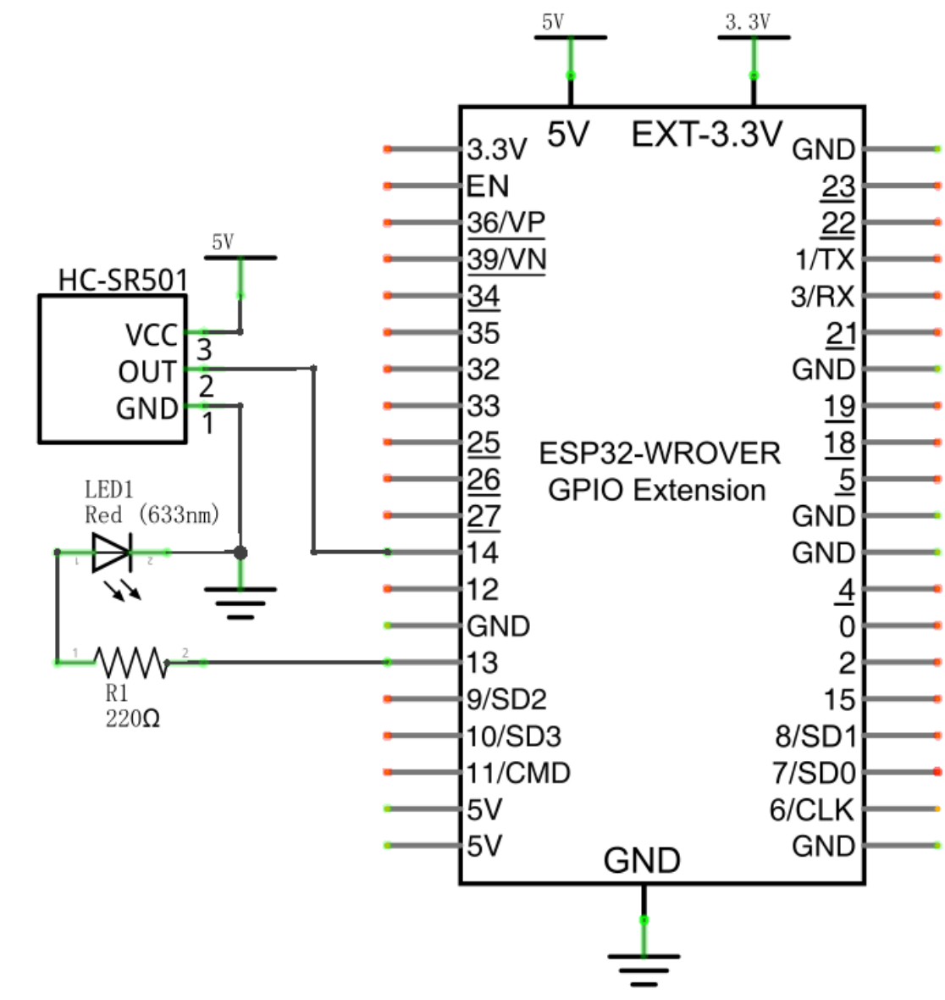
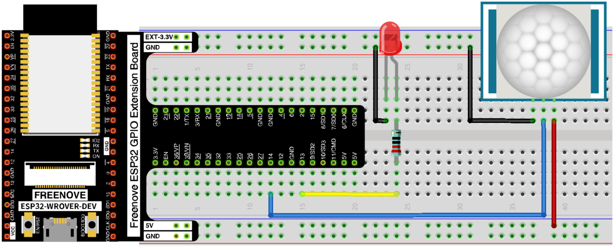
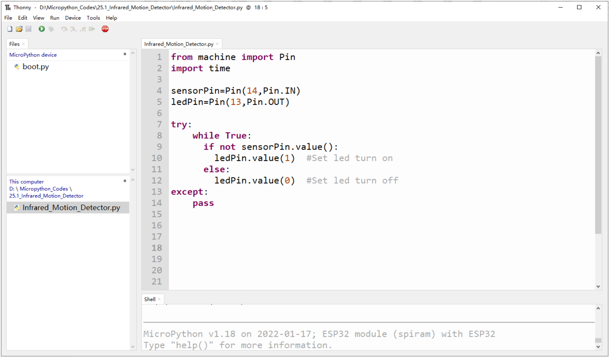
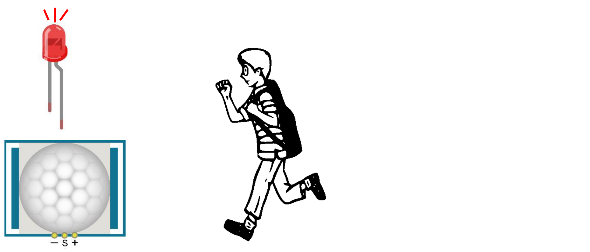
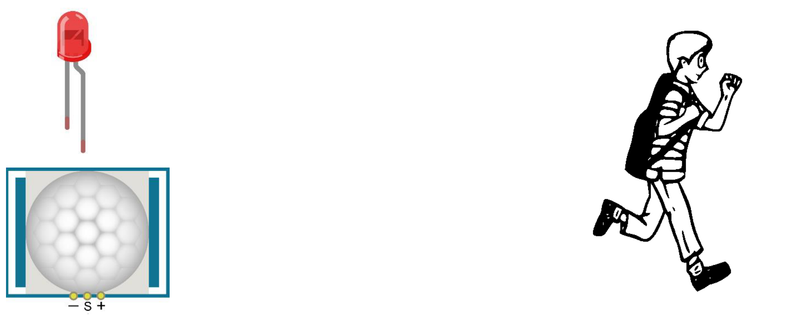

Sensore di movimento a infrarossi
In questo capitolo impareremo a usare un sensore molto diffuso: il sensore di movimento a infrarossi (sensore PIR).
Progetto – Rilevatore di movimento a infrarossi con LED di segnalazione
In questo progetto realizzeremo un rilevatore di movimento usando un sensore piroelettrico a infrarossi per il corpo umano. Quando qualcuno si trova nelle vicinanze del rilevatore, il LED si accende automaticamente; quando non c'è nessuno nei paraggi, il LED si spegne.
Questo sensore di movimento a infrarossi rileva lo spettro infrarosso (cioè le tracce di calore) emesso da esseri umani e animali.
Elenco dei componenti
| Componente | Quantità | Immagine |
|---|---|---|
| ESP32-WROVER | 1 |  |
| Scheda di estensione GPIO (GPIO Extension Board) | 1 |  |
| Breadboard | 1 |  |
| Sensore di movimento HC-SR501 | 1 |  |
| LED | 1 |  |
| Resistenza da 220 Ω | 1 |  |
| Cavetti jumper F/M (femmina-maschio) Cavetti jumper M/M (maschio-maschio) |
3 2 |
 in alto F/M, in basso M/M |
Conoscenze sul componente
Ecco come è fatto il sensore di movimento a infrarossi (HC-SR501):
| Vista dall'alto | Vista dal basso | Simbolo schematico |
|---|---|---|
 |
 |
 |
Descrizione:
Tensione di funzionamento: 5 V – 20 V (DC). Corrente a riposo: 65 µA.
Attivazione automatica. Quando un corpo vivente entra nell'area di rilevamento del sensore, il modulo porta l'uscita a livello alto (3,3 V). Quando il corpo esce dall'area di rilevamento, l'uscita resta alta ancora per un tempo T, poi passa a livello basso (0 V). Il tempo di ritardo T si regola con il potenziometro R1.
A seconda della posizione del ponticello (jumper) si può scegliere tra la modalità di attivazione non ripetibile e quella ripetibile.
L: modalità di attivazione non ripetibile. Dopo aver rilevato un corpo, il modulo porta l'uscita a livello alto; finito il tempo di ritardo, la riporta a livello basso. Mentre l'uscita è alta, il sensore non rileva più altri corpi.
H: modalità di attivazione ripetibile. A differenza della modalità L, mentre l'uscita è alta il sensore continua a rilevare il corpo finché questo non si allontana. Solo allora inizia a contare il tempo e, trascorso il ritardo T, porta l'uscita a livello basso.
Tempo di blocco del rilevamento: dopo aver portato l'uscita a livello alto o basso, il sensore resta bloccato e ignora i segnali esterni per brevi intervalli di tempo (inferiori al tempo di ritardo).
Tempo di inizializzazione: dopo l'accensione il modulo ha bisogno di circa 1 minuto per inizializzarsi. In questo periodo l'uscita passa alternativamente dal livello alto a quello basso.
Una caratteristica di questo sensore è che la sensibilità è massima quando un corpo si avvicina o si allontana passando lungo il bordo della cupola del sensore. Se invece un corpo si avvicina o si allontana dalla cupola in direzione verticale, il sensore non lo rileva bene (attenzione a questo limite). Nota: il raggio di rilevamento (la distanza entro cui un corpo viene rilevato) si regola con il potenziometro.
In pratica possiamo considerare questo sensore come un semplice interruttore a induzione, cioè un interruttore che scatta quando rileva una presenza.
Circuito
Schema elettrico

Riepilogo dei collegamenti (ricavato dallo schema):
| Da | A |
|---|---|
| HC-SR501 – VCC (pin 3, +) | 5V |
| HC-SR501 – OUT (pin 2, S) | GPIO 14 |
| HC-SR501 – GND (pin 1, −) | GND |
| GPIO 13 | resistenza R1 220 Ω → LED (anodo) |
| LED (catodo) | GND |
Collegamento hardware. Per qualsiasi supporto potete contattare Freenove all'indirizzo: support@freenove.com

Codice
In questo progetto usiamo il sensore di movimento a infrarossi per comandare un LED: in pratica il sensore funziona come un interruttore azionato dal movimento. Per questo il codice è simile a quello del progetto "Button & Led" (Pulsante e LED). La differenza è che il sensore porta l'uscita a livello alto quando rileva una variazione, e a livello basso quando non rileva nulla. Quando l'uscita del sensore è alta il LED si accende, altrimenti il LED si spegne.
Prima di iniziare, sposta la cartella dei programmi "Freenove_Ultimate_Starter_Kit_for_ESP32/Python/Python_Codes" sul disco D, in modo che il percorso diventi "D:/Micropython_Codes".
Apri "Thonny" e clicca su "This computer" → "D:" → "Micropython_Codes" → "25.1_Infrared_Motion_Detector", poi fai doppio clic su "Infrared_Motion_Detector.py".
Infrared Motion Detector

Codice del file Infrared_Motion_Detector.py (commenti tradotti):
from machine import Pin
import time
sensorPin=Pin(14,Pin.IN)
ledPin=Pin(13,Pin.OUT)
try:
while True:
if not sensorPin.value():
ledPin.value(1) # Accende il LED
else:
ledPin.value(0) # Spegne il LED
except:
pass
Clicca su "Run current script" (esegui lo script corrente). Appoggia il sensore su un tavolo, senza muoverlo, e aspetta circa un minuto. Poi prova ad allontanarti o ad avvicinarti al sensore e osserva se il LED si accende o si spegne automaticamente.
Puoi ruotare i potenziometri del sensore per regolare il rilevamento, oppure cambiare modalità spostando il ponticello (jumper). (Approfondimento: vedi Appendice A.)

Inoltre, modificando il codice, puoi usare questo sensore per comandare altri moduli e realizzare funzioni diverse, come una lampada o una porta che si attivano al passaggio di una persona.
Avvicinati al sensore di movimento a infrarossi (il LED si accende)

Allontanati dal sensore di movimento a infrarossi (il LED si spegne)

Nota del traduttore (non presente nell'originale). Il testo dice che il LED si accende quando l'uscita del sensore è alta, ma nel codice la condizione è
if not sensorPin.value():. Così com'è, quindi, il programma accende il LED (ledPin.value(1)) quando l'uscita del sensore è bassa, cioè quando non c'è movimento: il contrario di quanto descritto. Se durante la prova il LED si comporta al contrario, cambia la riga 9 in:
Appendice A: regolazione dei potenziometri
Approfondimento aggiunto alla traduzione, non presente nell'originale.
Sul retro del sensore ci sono due potenziometri, R1 e R2, accanto al ponticello L/H. Sono piccoli trimmer che si girano con un cacciavite piccolo, e regolano due cose diverse.
| Potenziometro | Cosa regola | Effetto pratico |
|---|---|---|
| R1 | Tempo di ritardo T | Per quanto tempo l'uscita resta alta (LED acceso) dopo che il movimento è finito |
| R2 | Distanza (sensibilità) | Quanto lontano deve essere una persona per essere rilevata |
Il capitolo Freenove nomina esplicitamente solo R1 per il tempo. Per la distanza dice solo "si regola con il potenziometro": essendo R1 già usato per il tempo, è R2.
R1: il tempo di ritardo
Quando una persona esce dall'area di rilevamento, l'uscita non torna subito a 0 V: resta alta ancora per il tempo T, poi si abbassa.
- T corto: il LED si spegne poco dopo che la persona se n'è andata.
- T lungo: il LED resta acceso più a lungo, come una luce delle scale.
Di solito T va da qualche secondo a qualche minuto, a seconda del modello.
Nel nostro progetto il programma non gestisce nessun tempo: copia soltanto lo stato del sensore sul LED. Quindi la durata del LED acceso la decide R1, non il codice.
R2: la distanza
Regola fin dove arriva il rilevamento, tipicamente da circa 3 a circa 7 metri.
- Al minimo: reagisce solo se ci si avvicina molto.
- Al massimo: reagisce anche a movimenti lontani, ma aumenta il rischio di falsi allarmi.
Il ponticello L/H, che lavora insieme a R1
- L (non ripetibile): il sensore scatta e resta alto per il tempo T, anche se nel frattempo ci si continua a muovere. Poi si abbassa e solo dopo può scattare di nuovo.
- H (ripetibile): finché c'è movimento il tempo T riparte da capo, e il LED si spegne solo T secondi dopo l'ultimo movimento. È la modalità adatta a una lampada che deve restare accesa finché c'è qualcuno.
Consigli pratici per la prova in classe
- R1 al minimo: così non si devono aspettare minuti per vedere il LED spegnersi.
- R2 a metà: è un buon punto di partenza.
- Ponticello su H: il comportamento è più intuitivo.
- Aspettare circa 1 minuto dopo l'accensione: il sensore si sta inizializzando e il LED può accendersi e spegnersi da solo.
- Blocco dopo lo spegnimento: per qualche istante il sensore non rileva nulla. È normale, non è un guasto.
Attenzione al proprio modulo
- Posizione dei trimmer: non tutti gli HC-SR501 hanno R1 e R2 nella stessa posizione del disegno Freenove. Alcuni li chiamano "Tx/Sx" o "TIME/SENS", altri non hanno scritte.
- Senso di rotazione: anche il verso che aumenta il valore può cambiare tra un modulo e l'altro.
Nel dubbio, si può fare una prova: girare un trimmer e osservare cosa cambia. Se cambia quanto resta acceso il LED, è il tempo; se cambia la distanza a cui il sensore rileva, è la sensibilità. I trimmer hanno un fine corsa: non vanno forzati oltre.
Traduzione italiana del Capitolo 25 (pp. 276–280) del tutorial Python del "Freenove Ultimate Starter Kit for ESP32", © Freenove, rilasciato con licenza Creative Commons Attribuzione – Non commerciale – Condividi allo stesso modo 3.0 Unported (CC BY-NC-SA 3.0). Questa traduzione è distribuita con la stessa licenza. Freenove® è un marchio di Freenove Creative Technology Co., Ltd.